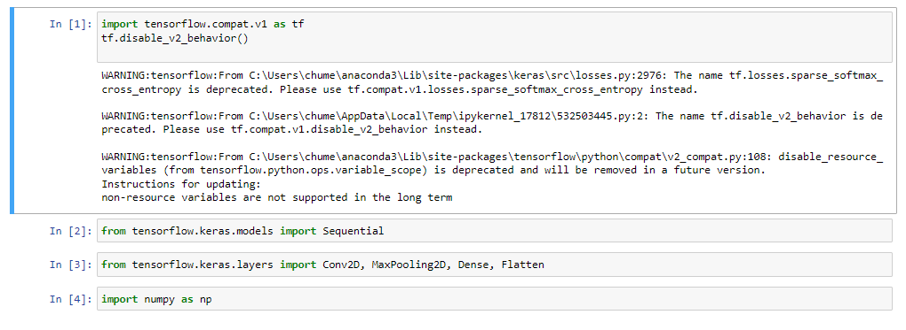
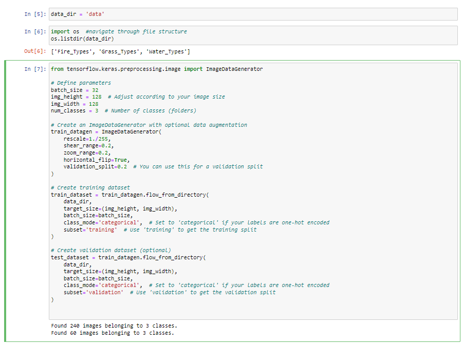
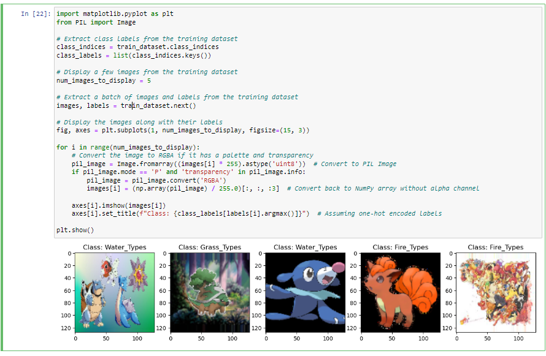

Pokedex using CNN
This is the process of creating and training a Convolutional Neural Network (CNN) using TensorFlow and Keras for a Pokemon image classification task.
-
Step 1 : Importing TensorFlow libraries
I import specific components from the TensorFlow Keras API. Keras is integrated into TensorFlow, and importing the Sequential model and various layers (Conv2D, MaxPooling2D, Dense, and Flatten) for building a neural network.
Step 2 : Loading Data
I check the content of a directory ('data') and lists subdirectories ('Fire_Types', 'Grass_Types', 'Water_Types'). TensorFlow's ImageDataGenerator is used to perform data augmentation and create training and validation datasets.
Step 3: Visualizing data
I visualized the class labels, few images from the training dataset using matplotlib and PIL.
Step 4: Data Reshaping

The code checks and prints the shapes of batches from the training and test datasets.
Step 5: Evaluating Accuracy

A Sequential model is created using Conv2D and MaxPooling2D layers for feature extraction, followed by Flatten and Dense layers for classification. The model is compiled with binary crossentropy loss and the Adam optimizer. The model is trained using the fit method on the training dataset for 5 epochs.